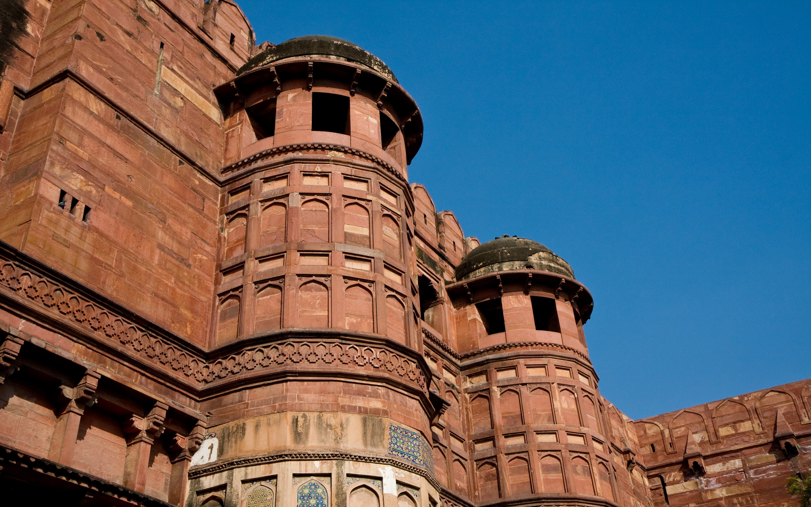
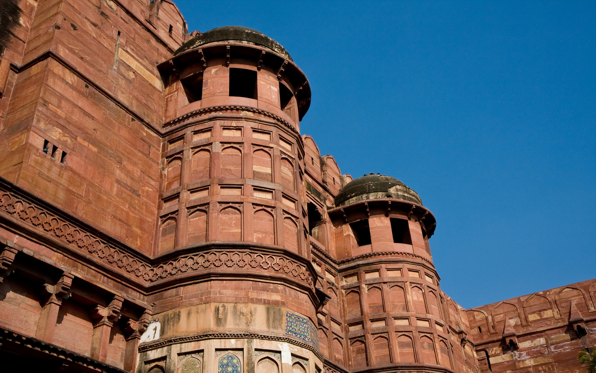

The Statue of Unity is the world's tallest statue, with a height of 182 metres (597 feet), located near Kevadia in the state of Gujarat, India. It depicts Indian statesman and independence activist Vallabhbhai Patel (1875–1950), who was the first deputy prime minister and home minister of independent India and an adherent of Mahatma Gandhi. Patel is highly respected for his leadership in uniting 562 princely states of India to form the single Union of India. The statue is located in Gujarat on the Narmada River in the Kevadiya colony, facing the Sardar Sarovar Dam 100 kilometres (62 mi) southeast of the city of Vadodara.
The project was first announced in 2010, and construction started in October 2013 by Indian company Larsen & Toubro, with a total construction cost of ₹27 billion (US$422 million). It was designed by Indian sculptor Ram V. Sutar and was inaugurated by the Prime Minister of India, Narendra Modi, on 31 October 2018, the 143rd anniversary of Patel's birth.
# History
Narendra Modi announced the project on 7 October 2013 to mark the beginning of his tenth year as the chief minister of Gujarat.
A society named Sardar Vallabhbhai Patel Rashtriya Ekta Trust (SVPRET) was formed under the chairmanship of the Chief Minister of Gujarat, to execute the project.
Statue of Unity Movement was started in 2013 to collect the iron needed for the statue by asking farmers to donate their used farming instruments. By 2016, a total of 135 metric tonnes of scrap iron had been collected and about 109 tonnes of it was used to make the foundation of the statue after processing. A marathon titled Run For Unity was held on 15 December 2013 in Surat and Vadodara in support of the project.
# Design and construction
Design
After studying statues of Patel across the country, a team of historians, artists, and academics chose a design submitted by the Indian sculptor Ram V. Sutar. The Statue of Unity is a larger version of a statue of the leader installed at Ahmedabad International Airport. Commenting on the design, Ram Sutar's son, Anil Sutar explains that, "the expression, posture and pose justify the dignity, confidence, iron will as well as kindness that his personality exudes. The head is up, a shawl flung from shoulders and hands are on the side as if he is set to walk". Three models of the design measuring 3 feet (0.91 m), 18 feet (5.5 m), and 30 feet (9.1 m) were initially created. Once the design of the largest model was approved, a detailed 3D-scan was produced which formed the basis for the bronze cladding cast in a foundry in China.
Patel's dhoti-clad legs and the use of sandals for footwear rendered the design thinner at the base than at the top thereby affecting its stability. This was addressed by maintaining a slenderness ratio of 16:19 rather than the customary 8:14 ratio of other tall buildings. The statue is built to withstand winds of up to 180 kilometres per hour (110 mph) and earthquakes measuring 6.5 on the Richter scale which are at a depth of 10 km and within a radius of 12 km of the statue. This is aided by the use of two 250 tonne tuned mass dampers ensuring maximum stability.
The total height of the structure is 240 m (790 ft), with a base of 58 m (190 ft) and the statue measuring 182 m (597 ft). The height of 182 metres was specifically chosen to match the number of seats in the Gujarat Legislative Assembly.
FundingThe Statue of Unity was built by a Public Private Partnership model, with most of the money coming from the Government of Gujarat. The Gujarat state government had allotted ₹500 crore (equivalent to ₹641 crore or US$80 million in 2020) for the project in its budget from 2012 to 2015. In the 2014–15 Union Budget, ₹200 crore (equivalent to ₹272 crore or US$34 million in 2020) was allocated for the construction of the statue. Funds were also contributed by Public Sector Undertakings under the Corporate Social Responsibility scheme.
ConstructionA consortium comprising Turner Construction, Michael Graves and Associates and the Meinhardt Group supervised the project. The project took 57 months to complete – 15 months for planning, 40 months for construction and 2 months for handing over by the consortium. The total cost of the project was estimated to be about ₹2,063 crore (equivalent to ₹28 billion or US$350 million in 2020) by the Government. The tender bids for the first phase were invited in October 2013 and were closed in November 2013.
Narendra Modi, then serving as the Chief Minister of Gujarat, laid the statue's foundation stone on 31 October 2013, the 138th anniversary of Patel's birth.
Indian infrastructure company Larsen & Toubro won the contract on 27 October 2014 for its lowest bid of ₹2,989 crore (equivalent to ₹41 billion or US$510 million in 2020) for the design, construction and maintenance of the statue. L&T commenced the construction on 31 October 2014. In the first phase of the project, ₹1,347 crore was earmarked for the main statue, ₹235 crore for the exhibition hall and convention centre, ₹83 crore for the bridge connecting the memorial to the mainland and ₹657 crore for the maintenance of the structure for a duration of 15 years after its completion. The Sadhu Bet hillock was flattened from 70 metres to 55 metres to lay the foundation of the statue.
L&T employed over 3000 workers and 250 engineers in the statue's construction. The core of the statue used 210,000 cubic metres (7,400,000 cu ft) of cement and concrete, 6,500 tonnes of structural steel, and 18,500 tonnes of reinforced steel. The outer façade is made up of 1,700 tonnes of bronze plates and 1,850 tonnes of bronze cladding which in turn consists of 565 macro and 6000 micro panels. The bronze panels were cast in Jiangxi Tongqing Metal Handicrafts Co. Ltd (the TQ Art foundry) in China as facilities large enough for such casting were unavailable in India. The bronze panels were transported over sea and then by road to a workshop near the construction site where they were assembled.
Local tribals belonging to the Tadvi tribe opposed the land acquisition for the development of tourism infrastructure around the statue. Around 300 activists were arrested ahead of unveiling of the statue. People of Kevadia, Kothi, Waghodia, Limbdi, Navagam, and Gora villages opposed the construction of the statue and demanded the restitution of the land rights over 375 hectares (927 acres) of land acquired earlier for the dam as well as for the formation of a new Garudeshwar subdistrict. They also opposed the formation of Kevadia Area Development Authority (KADA) and the construction of the Garudeshwar weir-cum-causeway project. The government of Gujarat accepted most of their demands.
Construction of the monument was completed in mid-October 2018; and the inaugural ceremony was held on 31 October 2018 (143rd birth anniversary of Vallabhbhai Patel), and was presided over by Prime Minister Narendra Modi. The statue has been described as a tribute to Indian engineering skills.
# Design and construction
The Statue of Unity is the world's tallest statue at 182 metres (597 ft). It rises 54 metres (177 ft) higher than the previous record holder, the Spring Temple Buddha in China's Henan province. The previous tallest statue in India was the 41 m (135 ft) tall statue of Lord Hanuman at the Paritala Anjaneya Temple near Vijayawada in the state of Andhra Pradesh. The statue can be seen within a 7 km (4.3 mi) radius.
The monument is constructed on a river island named Sadhu Bet, 3.2 km (2.0 mi) away from and facing the Narmada Dam downstream. The statue and its surroundings occupy more than 2 hectares (4.9 acres), and are surrounded by a 12 km (7.5 mi) long artificial lake formed by the Garudeshwar weir downstream on the Narmada river.
The statue is divided into five zones of which only three are accessible to the public. From its base to the level of Patel's shins is the first zone which has three levels and includes the exhibition area, mezzanine and roof. The first zone also contains a memorial garden and a museum. The second zone reaches up to Patel's thighs, while the third extends up to the viewing gallery at a height of 153 metres. The fourth zone is the maintenance area while the final zone comprises the head and shoulders of the statue.
The museum in the first zone catalogues the life of Sardar Patel and his contributions. An adjoining audio-visual gallery provides a 15-minute long presentation on Patel and also describes the tribal culture of the state. The concrete towers which form the statue's legs contain two elevators each. Each lift can carry 26 people at a time to the viewing gallery in just over 30 seconds. The gallery is located at a height of 153 metres (502 ft) and can hold up to 200 people.
# Tourism
Over 128,000 tourists visited the statue in the 11 days after its opening to the public on 1 November 2018. The daily average tourist footfall at Statue of Unity during November 2019 reached 15,036, outpacing the Statue of Liberty (which attracts around 10,000 daily visitors on average). It has been included in the Shanghai Cooperation Organisation’s ‘8 Wonders of SCO’ list. In its first year of operation, the Statue of Unity attracted 2,900,000 visitors and collected ₹82 crore (US$11.64 million) in ticket revenue. By 15 March 2021, 5,000,000 tourists visited the venue. It was visited by one crore (10 million) people by November 2022.

 
